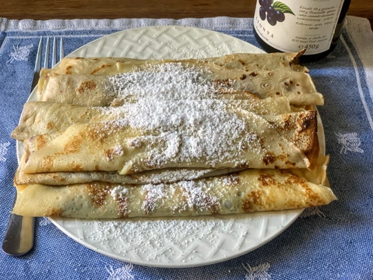

Navigation: Home >
Hungarian
Palacsinta

Total time: 25 mins
Ingredients
Makes about 12 pieces.
For the palacsinta
- 150 grams (1 cup) all-purpose flour
- 2 eggs
- 175 ml (¾ cup) whole milk
- 175 ml (¾ cup) water
- 1 tablespoon sugar
- 1 teaspoon vanilla sugar (or 1 teaspoon vanilla extract)
- 3 tablespoons butter, melted (for the batter)
- 2 tablespoons butter (for the pan)
- Pinch of salt
Fillings
Common fillings in Hungary include fruit preserves (apricot, raspberry,
plum, blueberry), sweetened túró, lemon mixed with powdered sugar,
cinnamon sugar, and Nutella.
For the sweetened túró, mix together:
- 400 grams (2 cups) cottage cheese, mashed with a fork to a paste
- 4 tablespoons sour cream
- 4 tablespoons powdered sugar
- 1 teaspoon vanilla sugar (or 1 teaspoon vanilla extract)
- Freshly grated lemon zest and juice using 1 small lemon
- 2 tablespoons raisins
Instructions
-
Melt 3 tablespoons butter in a pan. Then using a blender or a whisk, mix
together the flour, liquid (milk and water), eggs, sugar, vanilla sugar
(or extract), melted butter, and salt in a small pot.
-
With half a teaspoon of butter, lightly coat the surface of a
regular-sized (10-inch) non-stick pan on medium-high. Once butter is
bubbling, using a ladle, pour a quarter of a cup (about half a ladle) of
batter onto the hot pan and spread it evenly across the surface so it
forms a thin layer. Cook the first side until splotches of brown appear,
about a minute, then flip it over with the help of a wooden spatula or
fork and do the other side for half a minute. Transfer the palacsinta to
a plate and cover the pile with another plate so they keep warm.
-
Repeat for the remaining batter. After each palacsinta, re-butter the
pan with a touch of butter so the batter doesn't stick to the bottom and
palacsinta gets extra tasty.
-
Fill the palacsintas as desired, roll them into logs, and sprinkle with
powdered sugar. Alternatively, serve them unfilled piled on a serving
plate and let people finish for themselves.
Image and recipe source:
Offbeat Budapest